Benutzerbezogene Seiten
Mein Konto
Mein Konto enthält Einstellungen, die ein Nutzer zu seinem Benutzerkonto machen kann. Im folgenden ist die Einstellungsmaske zu sehen.
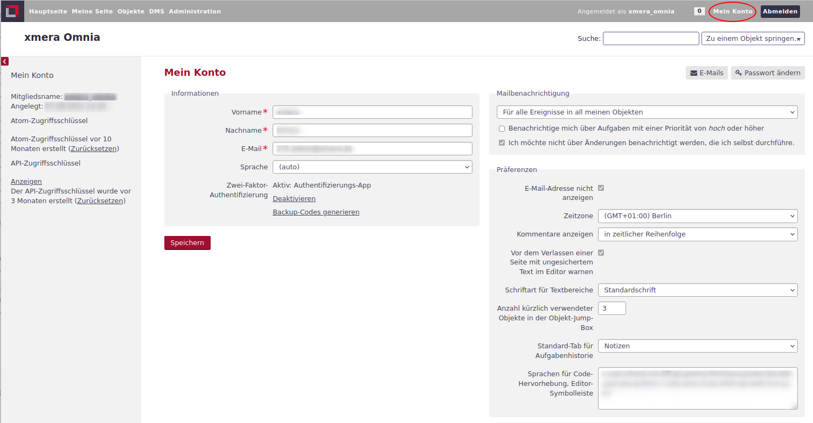
Es lassen sich
-
der Name
-
die E-Mail Adresse bzw. Adressen
-
die Sprache
-
das Passwort und ggf. die 2-Faktor-Authentifizierung
-
allgemeine Einstellungen zur E-Mail Benachrichtigung und
-
allgemeine Präferenzen
Der Mitgliedsname, über den die Anmeldung und Autorenkennzeichnung in der Anwendung erfolgt, kann nur durch den Administrator geändert werden. Pflichteingaben sind der Vorname, der Name und die E-Mailadresse. Die Sprache wird im Automodus automatisch ermittelt, kann aber auch manuell angepasst werden. Alle Übersetzungen liegen in der Standardkonfiguration bislang nur für die Sprache Deutsch vor.
| Für unsere Kunden stellen wir auf Wunsch weitere Sprachen bereit! |
- E-Mails
-
Neben der Haupt-E-Mailadresse des Kontos können zum Konto noch weitere E-Mailadressen verwaltet werden. Durch Klick auf den Button 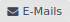 öffnet sich ein weiteres Fenster, in dem zusätzliche E-Mailadressen verwaltet werden können.
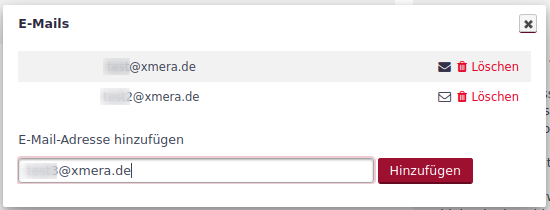
Der schwarze Briefumschlag 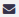 neben der E-Mailadresse zeigt an, dass diese Adresse aktiv ist. Ist das Symbol weiß 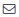, so ist diese Adresse inaktiv. Durch einen Klick auf das Symbol kann eine Adresse aktiviert oder deaktiviert werden.
Soll eine weitere E-Mailadresse hinzugefügt werden, so wird diese in das Eingabefeld unterhalb der Liste eingetragen. Mit Klick auf den Button 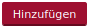 wird die E-Mailadresse in die Liste übernommen.
Über den Button
 ist das Löschen einer E-Mailadresse möglich. Nach dem Klick muss das Löschen nochmals in einem neuen Fenster bestätigt werden. Anschließend wird die E-Mailadresse aus der Konfiguration entfernt.
ist das Löschen einer E-Mailadresse möglich. Nach dem Klick muss das Löschen nochmals in einem neuen Fenster bestätigt werden. Anschließend wird die E-Mailadresse aus der Konfiguration entfernt. - Passwort ändern
-
Mit dem Klick auf den Button 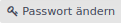 wird ein neues Fenster zum Ändern des Passworts geöffnet.
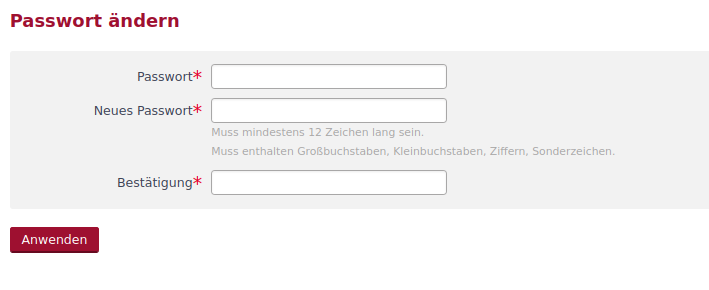
Hier sind das aktuell gültige Passwort und zwei mal das neue Passwort einzutragen. Mit dem Klick auf den Button
 wird das Passwort geändert. Werden Fehler bei der Eingabe gemacht, wie z.B. die Vorgaben für ein gültiges Passwort nicht eingehalten, so wird der Änderungsprozess nicht durchgeführt und der Nutzer in einem roten Feld auf den Fehler hingewiesen.
wird das Passwort geändert. Werden Fehler bei der Eingabe gemacht, wie z.B. die Vorgaben für ein gültiges Passwort nicht eingehalten, so wird der Änderungsprozess nicht durchgeführt und der Nutzer in einem roten Feld auf den Fehler hingewiesen. - 2-Faktor-Authentifizierung
-
xmera Omnia bietet die Möglichkeit sich über eine 2-Faktor-Authentifizierung mit Hilfe eines One-Time-Passworts (OTP) anzumelden. Ist diese für ein Konto nicht eingerichtet, so kann der Nutzer durch Klick auf Authentifizierungs-App aktivieren die Einrichtung der 2-Faktor-Authentifizierung beginnen.
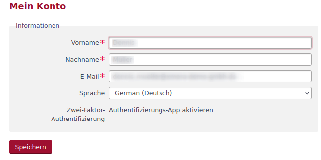
Es erscheint ein Fenster zum Einrichten der 2-Faktor-Authentifizierung.
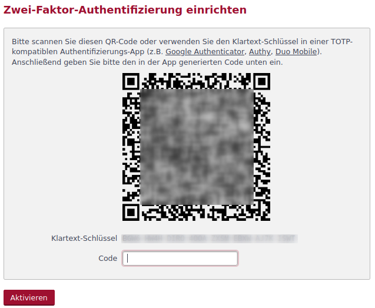
Diese Maske zeigt den Schlüssel als QR-Code und als Klar-Text-Schlüssel an. Dieser Schlüssel ist in die Authenfizierungs-App zu übertragen.
Anschließend ist mit der Authentifizierungs-App ein OTP zu generieren und in das Feld Code zu übertragen. Wenn Anschließend der Button 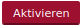 betätigt wird, ist die 2-Faktor-Authentifizierung aktiviert.
Danach ergeben sich in der Konto-Information weitere Bedienmöglichkeiten.
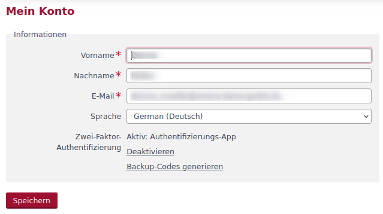
Zum Deaktivieren klickt man auf den Link Deaktivieren. Damit erscheint die Aufforderung das OTP aus der Authentifizierungs-App einzugeben. Ist dieses erfolgt, ist die 2-Faktor-Authentifizierung deaktiviert.
Der Backup-Code hilft, wenn die Authentifizierungs-App nicht zur Verfügung steht. Für diesen Fall wird mit dieser Funktion eine Liste von Codes erstellt, mit denen ersatzweise gearbeitet werden kann. Um diese Liste zu generieren, klickt man auf den Link Backup-Codes generieren. Es erscheint ein Fenster, in dem man den aktuellen OTP-Code einträgt. Anschließend wird die Liste der Backup-Codes ausgegeben.
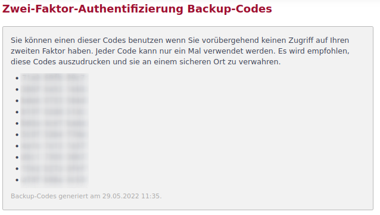
Die Liste sollte ausgedruckt und an einem sicheren Ort verwahrt werden.
Mein Profil
Das Benutzerprofil enthält verschiedene nutzerbezogene Daten, die je nach Konfiguration von anderen Nutzern des Systems eingesehen werden können. Das Profil ist im Nutzermenü durch Klick auf den Benutzernamen erreichbar.
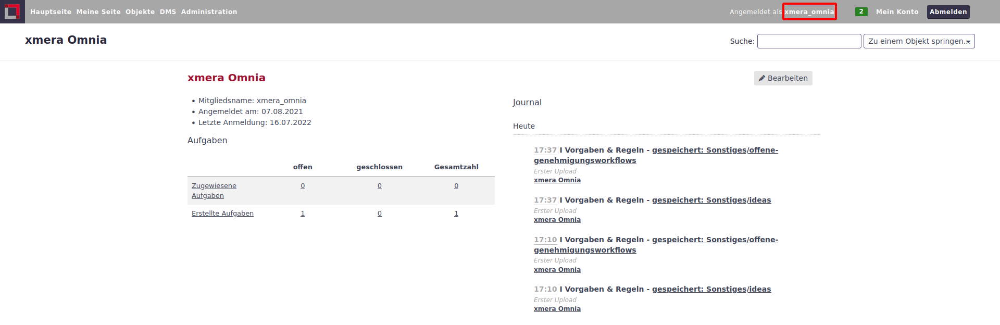
Die Sichbarkeit von Benutzerprofilen wird im Administrationsbereich über die Rollendefinition gesteuert.
Meine Seite
Meine Seite dient dem Nutzer als Übersicht über all seine Arbeiten und Informatione, die für ihn wichtig sind. Meine Seite ist über das Hauptmenü zugänglich.
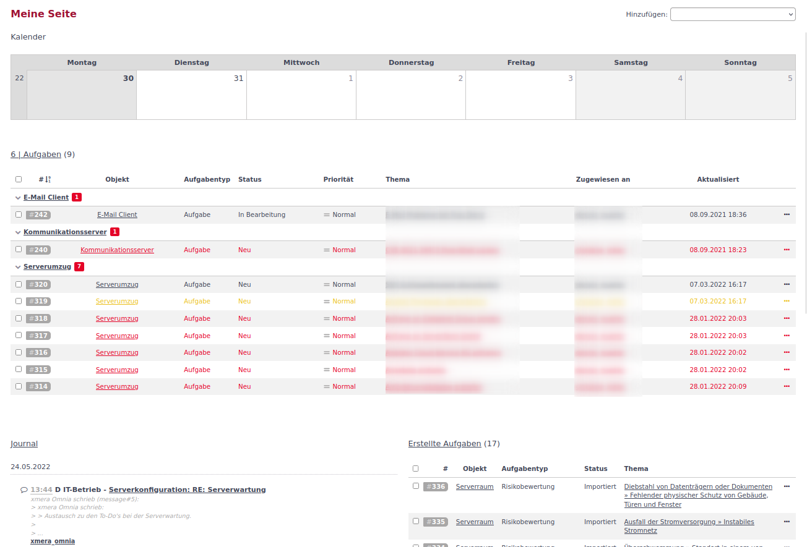
Die Informationen werden auf der Seite in Blöcken zur Verfügung gestellt. Der Nutzer kann dabei die Blöcke nach seinem Wunsch zusammenstellen und positionieren.
Block hinzufügen:
Über das Auswahlfeld Hinzufügen: können verschiedene Informationsblöcke der Seite hinzugefügt werden.

Durch Klicken auf den gewünschten Informationsblöcke wird dieser an oberster Position eingefügt. Wenn eine Parametrierung des Blocks notwendig ist, wird die Konfiguration beim Platzieren des Blocks direkt geöffnet.
Die Bearbeitung der Blöcke ist gleich der Bearbeitung der Blöcke des Dashboards.